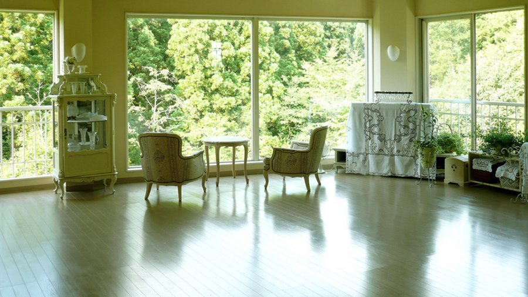
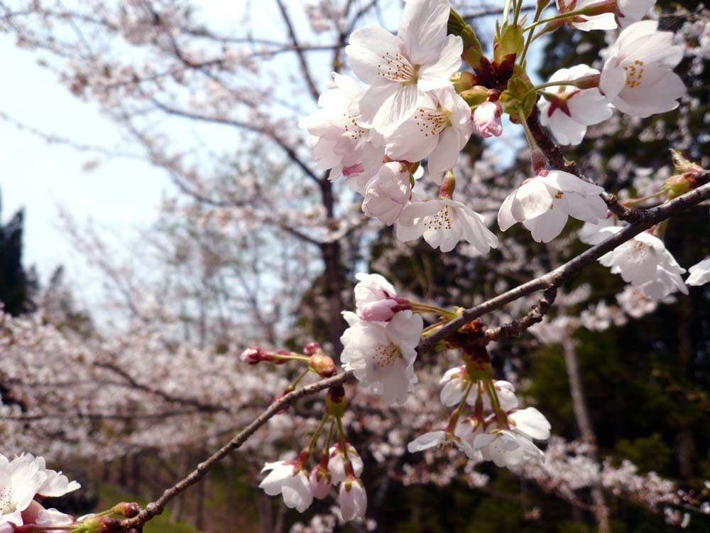
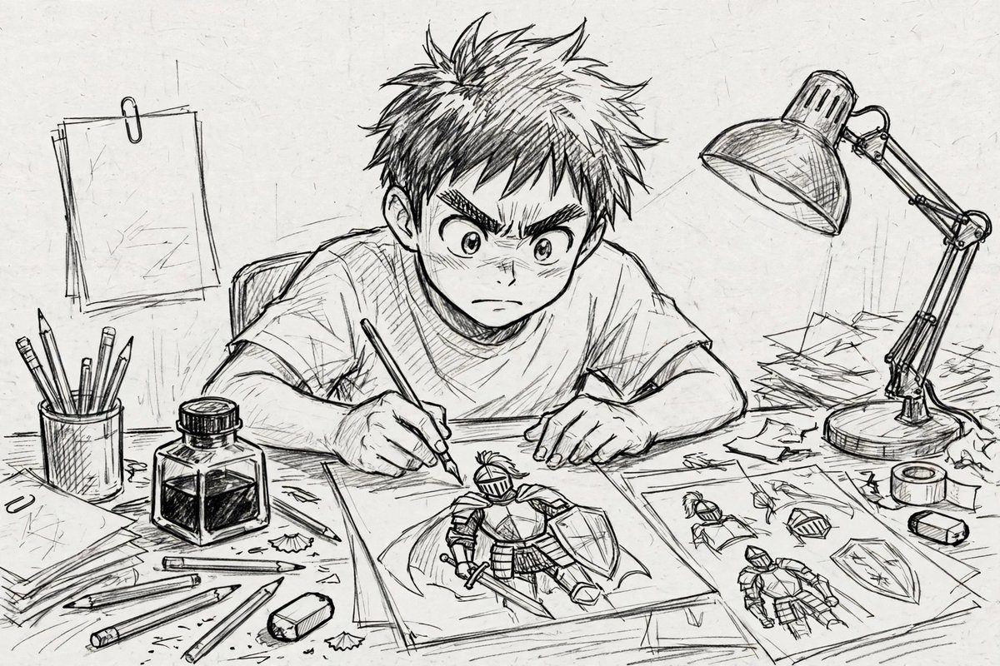

26
Nov. 2026

愛しい家・その20 リビング ― 2009年5月18日
らせん階段を上った二階のリビング。目の前に広がる大迫力の森が主役の、季節を感じられる場所です…
23
Nov. 2026

愛しい家・その17 桜咲きました！ ― 2009年5月2日
これは2009年5月の記録です。季節は巡りますが、懐かしい一篇としてご紹介します。遅咲きの我が家の桜が、ようやく咲きました…
22
Nov. 2026

いい夫婦の日、11のコード ― 137と963
今日は11月22日、いい夫婦の日です。11も22も、わたくしにとって重要な数字です。今日は、11時22分と22時22分を、画面に収めることができました…
21
Nov. 2026

重要選抜情報！ 2026年 マイベストソング発表！
2026年 マイベストソング発表！ 10位から1位までを、ラジオのDJ形式で発表しています。ジャガープレミアムチャンネルからお届けいたします…
21
Nov. 2026

ゲー魔王 完全解説！ vol.1 No.1「あした みえない ぼくたち」
新連載を始めます。普津澤画乃新『ゲー魔王』（少年ジャンプ＋、全5巻・全38話）を、1話ずつ、もんが解説していく「完全解説」です…